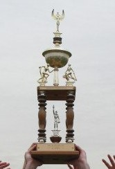
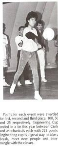
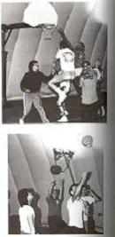

The Engineering Cup has taken place for the Fall semester, but don't worry - it will be returning this Spring! Currently, Biomedical Engineering is in the lead, winning an amazing 3 out of 4 games of soccer and football. Congrats!
The standings are:
Biomedical: 60 pts.
Electrical: 10 pts.
Chemical: 5 pts.
Undeclared: 5 pts.
Civil - Materials - Industrial - Mechanical: 0 pts
If you are a Rutgers student with Facebook, check out photos of the event here.
The Cup will return this Spring with Ultimate Frisbee, Volleyball, and more!
The Engineering Cup is an inter-departmental sporting event - meaning that each major (as well as first year students) will have a team. You will be placed on your team with students from your respective major and compete for the Engineering Cup and bragging rights for a year!
Check out the Cup in person, located in the front lobby of the Engineering Building on Busch Campus.
Questions? Want to help out planning for the Spring? Email the Events Committeee!
"The Engineering Cup, the olympics open to all engineers, has become a popular event in the College of Engineering. Some of the events are basketball, ping-pong, volleyball, tug of war, and pool. This year, the IE’s proves to be the strongest, with freshmen second, and ceramic and civil tied for third. Engineering Cup is an excellent way to promote interactions between different disciplines. It also gives everyone a chance to meet new people in a friendly, yet, competitive atmosphere."
-Precision, 1985
Although the Engineering Cup has stood in it’s glory alone and dusty in the lobby of the Engineering Building on Busch Campus, its time has arrived after a decade of hiatus. The Engineering Governing Council (EGC) has decided to renew the tradition that once brought so many engineers together on the same field.
The Engineering Cup is a series of inter-departmental competitive sports events. This year, the President of EGC, Shawn MacArthur, with the help of his team, Chair of the Events Committee, Jamie McCarthy, and Subcommittee Chairs, Andrzej Waszkiewicz and Divya Harjani, are taking the engineering events scene by storm. Presenting the first-ever 21st century renewal of the ENGINEERING CUP!
With the support of the student body, we can truly make this a spectacular event for all engineering fields. It is a great opportunity for engineers who are not involved with intramurals or team sports to get out on the field, stretch their muscles up a bit, get a little dirty, and win a shining gold cup for it!
The winning department has bragging rights for a year, their department name engraved on a beautiful plaque, and the glory of being the first 21st century winners of the rejuvenated Engineering Cup!